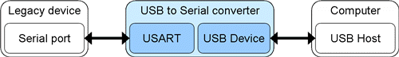

Description
cdc-serial.dir::USB CDC Serial Device
This page describes how to use the USB framework to produce a USB CDC Serial Device driver, which appears as a virtual COM port on host.
References
Communication Device Class
You can get some basic information about the Communication Device Class.
Purpose
CDC is used to connect communication devices, such as modems (digital or analog), telephones or networking devices. Its generic framework supports a wide variety of physical layers (xDSL, ATM, etc.) and protocols.
In this document, CDC is used to implement a USB to a serial data converter. A USB to serial converter can be used in this case to bridge a legacy RS-232 interface with a USB port.
Communication Class Interface
The
Communication Class Interface is used for device management. It includes requests to manage the device
state, its responses, as well as event notifications. This interface can also be optionally used for call management, i.e., setting up and terminating calls as well as managing their parameters.
The interface requires at least one endpoint (Default EP0) to used for device management. Optionally, another endpoint can be dedicated to event notification. This will usually be an Interrupt IN endpoint.
Data Class Interface
The
Data Class Interface is used for generic data transmissions. It provides a means for a communication device to actually transfer data to and from the host. In addition, it also enables the multiplexing of data and commands on the same interface, through the use of wrappers.
Endpoints for this interface must exist in pairs of the same type. This is necessary to allow both IN and OUT communication. Only the Bulk and Isochronous types can be used for these endpoints.

CDC Class Driver Architecture
Models
To account for the wide variety of existing communication devices, several
models have been defined, for more details you can refer to CDC spec. 1.1.
- POTS (Plain Old Telephone Service)
- Direct Line Control Model
- Datapump Model
- Abstract Control Model (ACM)
- Telephone
- ISDN
- Multi-Channel Model
- USB CAPI Model
- Networking
- Ethernet Networking Model
- ATM Networking Control Model
Class-specific Descriptors
CDC-specific information is described using Functional Descriptors. They define various parameters of an interface, such as how the device handles call management, or model-specific attributes.
Since the CDC specification defines quite a number of functional descriptors, they are not detailed here. Instead, they are presented in the various case studies of this document in which they are used.
Host Drivers
Most Operating Systems (OS) now include generic
drivers for a wide variety of USB classes. This makes developing a device simpler, since the host complexity is now handled by the OS. Manufacturers can thus concentrate on the device itself, not on developing specific host
drivers.
Here is a brief list of the various CDC implementations supported by several OS:
- Windows
- Abstract Control Model
- Remote NDIS
- Linux
- Abstract Control Model
- Ethernet Model
USB to Serial Converter
This section describes the implementation of the USB to serial converter using the CDC class and the AT91 USB Device Framework.
Bridging a Legacy Device and a Host with USB-Serial Converter

!!Model The CDC specification defines a model which suits this application perfectly: the
Abstract Control Model (ACM). It implements the requests and notifications necessary to communicate with an RS-232 interface.
The Abstract Control Model requires two interfaces, one Communication Class Interface and one Data Class Interface. Each of them must have two associated endpoints. The former shall have one endpoint dedicated to device management (default Control endpoint 0) and one for events notification (additional Interrupt IN endpoint).
The Data Class Interface needs two endpoints through which to carry data to and from the host. Depending on the application, these endpoints can either be Bulk or Isochronous. In the case of a USB to serial converter, using Bulk endpoints is probably more appropriate, since the reliability of the transmission is important and the data transfers are not time-critical.
Descriptors
The descriptors are modtly standard ones. The following code examples thus use the structures described in the
"AT91 USB device framework".
For CDC-specific descriptors, some new types are defined:
- CDCHeaderDescriptor
- CDCCallManagementDescriptor
- CDCAbstractControlManagementDescriptor
- CDCUnionDescriptor
Device Descriptor
const USBDeviceDescriptor deviceDescriptor = {
sizeof(USBDeviceDescriptor),
USBGenericDescriptor_DEVICE,
USBDeviceDescriptor_USB2_00,
CDCDeviceDescriptor_CLASS,
CDCDeviceDescriptor_SUBCLASS,
CDCDeviceDescriptor_PROTOCOL,
BOARD_USB_ENDPOINTS_MAXPACKETSIZE(0),
CDCDSerialDriverDescriptors_VENDORID,
CDCDSerialDriverDescriptors_PRODUCTID,
CDCDSerialDriverDescriptors_RELEASE,
0, // No string descriptor for manufacturer
1, // Index of product string descriptor is #1
0, // No string descriptor for serial number
1 // Device has 1 possible configuration
};
|
The Vendor ID and Product ID fields are used to determine which driver to use when the device is enumerated. The Vendor ID is provided by the USB-IF organization after registration; the product ID is completely vendor-specific. In the example implementation provided with this document, the Atmel vendor ID (03EBh) is used along with a custom product ID (6119h).
The configuration descriptor is followed by interface, endpoint and class- specific descriptors.
Communication Class Interface Descriptor
The bInterfaceClass should be set to 0x02 and bInterfaceSubClass should be set to 0x02.
Functional - Header Descriptor
Functional - Call Management Descriptor
Functional - Abstract Control Management Descriptor
Functional - Union Descriptor
Data Class Interface Descriptor
Data Endpoint Descriptors
The EPs are defined as
CDCDSerialDriverDescriptors_DATAOUT &
CDCDSerialDriverDescriptors_DATAIN.
// Bulk-OUT endpoint standard descriptor
{
sizeof(USBEndpointDescriptor),
USBGenericDescriptor_ENDPOINT,
USBEndpointDescriptor_ADDRESS(USBEndpointDescriptor_OUT,
CDCDSerialDriverDescriptors_DATAOUT),
USBEndpointDescriptor_BULK,
MIN(BOARD_USB_ENDPOINTS_MAXPACKETSIZE(
CDCDSerialDriverDescriptors_DATAOUT),
USBEndpointDescriptor_MAXBULKSIZE_FS),
0 // Must be 0 for full-speed bulk endpoints
},
// Bulk-IN endpoint descriptor
{
sizeof(USBEndpointDescriptor),
USBGenericDescriptor_ENDPOINT,
USBEndpointDescriptor_ADDRESS(USBEndpointDescriptor_IN,
CDCDSerialDriverDescriptors_DATAIN),
USBEndpointDescriptor_BULK,
MIN(BOARD_USB_ENDPOINTS_MAXPACKETSIZE(
CDCDSerialDriverDescriptors_DATAIN),
USBEndpointDescriptor_MAXBULKSIZE_FS),
0 // Must be 0 for full-speed bulk endpoints
},
|
String Descriptors
Several descriptors (
device, configuration, interface, etc.) can specify the index of a string descriptor to comment their use.
Class-specific Requests
The CDC specification defines a set of
class-specific requests for devices implementing the ACM. This section details these requests. Please refer to section 3.6.2.1 of the CDC spec. 1.1 for more information.
SetLineCoding, GetLineCoding
These requests are sent by the host to modify or retrieve the configuration of the serial line, which includes:
- Baudrate
- Number of stop bits
- Parity check
- Number of data bits
When the terminal application (such as HyperTerminal) on the host (PC) side changes the setting of the COM port, a SetLineCoding request is sent with the new parameters. The host may also retrieve the current setting using GetLineCoding, not modifying them if they are correct.
When a SET_LINE_CODING request is received, the device should read the new parameters. Then program the new parameters in the USART. A callback must be provided to the
USBD_Read function. See CDCDSerialDriver_SetLineCoding.
The code handling GET_LINE_CODING shall simply invoke the
USBD_Write function to send the current settings of the USART to the host. See CDCDSerialDriver_GetLineCoding.
SetControlLineState
This request is sent by the host to notify the device of two
state changes. The first bit (D0) of the wValue field of the request indicates whether or not a terminal is connected to the virtual COM port. Bit D1 indicates that the USART should enable/disable its carrier signal to start/stop receiving and transmitting data.
In practice, the USB to serial converter should operate only when those two bits are set. Otherwise, it should not transmit or receive data.
Since the SET_CONTROL_LINE_STATE request does not have a data payload, the device only has to acknowledge the request by sending a ZLP (zero-length packet), using the
USBD_Write method. See CDCDSerialDriver_SetControlLineState.
Before that, the wValue field should be parsed to retrieve the new control line
state. A single boolean variable can be used to keep track of the connection
state. If both the D0 and D1 bits are set, then the converter should operate normally, i.e., forward data between the USART and the USB host. Otherwise, it should stop its activity.
Notifications
Notifications are sent by the device when an event, such as a serial line
state change, has occurred. In this example, they are transmitted through a dedicated Interrupt IN endpoint. A special header must precede the data payload of each notification. This header has the same format of a SETUP request, so the
USBGenericRequest structure defined in the
"AT91 USB device framework" can be used.
Note that the device should only send a notification when there is a
state change, and not continuously. This does not really matter in practice, but only sending notifications sporadically will reduce the stress on the device.
Main Application
The job of the
main application is to bridge the USART and the USB. This means that data read from one end must be forwarded to the other end. This section describes several possibilities to do this.
USB Operation
Reading data coming from the host is done using the
CDCDSerialDriver_Read. Since this is an asynchronous function, it does not block the execution flow. This means that other actions (like reading data from the USART) can be performed while the transfer is going on. Whenever some data is sent by the host, the transfer terminates and the associated callback function is invoked. This callback (UsbDataReceived) can be programmed to forward the received data through the USART.
Likewise, the
CDCDSerialDriver_Write function can be called as soon as there is data to transmit, again without block the program flow. However, there cannot be two write operations at the same time, so the program must check whether or not the last transfer is complete. This can be done by checking the result code of the
CDCDSerialDriver_Write method. If USB_STATUS_LOCKED is returned, then there is already another operation in progress. The device will have to buffer the data retrieved from the USART until the endpoint becomes free again.
USART Operation
The USART peripheral present on AT91 chips can be used in two different ways. The classic way is to read and write one byte at a time in the correct registers to send and receive data.
A more powerful method is available on AT91SAM chips, by using the embedded Peripheral DMA Controller (PDC). The PDC can take care of transfers between the processor, memory and peripherals, thus freeing the processor to perform other tasks. Since the PDC interrupt happens on the buffer full, Some timer can be used to check if there is any data frags input from the USART.
Source
The documentation for this Page was generated from the following file:
cdc-serial.dir